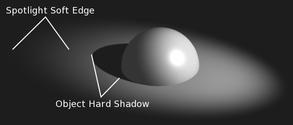

Вступ¶
Лампа типу «Прожектор» -- Spot випромінює конусоподібний промінь світла від верхівки конуса у заданому напрямку.
Освітлювач Spot є найбільш складних з освітлювальних об'єктів та насправді, тривалий час, був найбільш використовуваний серед інших, завдяки тому, що фактично тільки він один був здатний імітувати відкидання тіней. На даний час, після інтеграції простежувача променів у внутрішній рушій зображування Blender'а усі лами можуть давати відкидання тіней (за винятком Півсфери -- Hemi). Тим не менш, буфери тіней ламп типу Spot є набагато швидшими для зображування, рендерингу промінь-простежених тіней, особливо, у випадках їх розмиття/пом'якшення, а також прожекторні лампи забезпечують і іншу функціональність, зокрема «об'ємні» ореоли.
Опції лампи¶
Загальні опції лампи типу «Прожектор» -- Spot.
- Відстань -- Distance, Енергія -- Energy та Колір -- Color
- Ці устави є загальними для більшості типів ламп та описані тут -- Light Properties.
- Лише Цей Шар -- This Layer Only, Негативно -- Negative, Розсіяння -- Diffuse та Блікування -- Specular
- Ці устави керують тим, як ця лампа впливає світлом на сцену, про що описано тут -- What Light Affects.
- Спад світла -- Light Falloff та Сфера -- Sphere
Ці устави керують тим, як світло від лампи Spot згасає з відстанню. Дивіться детальніше тут -- Light Attenuation.

Зміна опцій прожектора також змінює вигляд його показу у 3D Огляді -- 3D View.
Тіні -- Shadows¶
Панель «Тінь» -- Shadow з установленим режимом «Тінь Променя» -- Ray Shadow.
Прожектори можуть використовувати промінь-простежені -- ray-traced тіні або буферовані -- buffered тіні. Кожен з цих видів тіні надає різні додаткові опції. Промінь-простежені тіні загалом більш точні, мають додаткові можливості, такі як прозорі тіні, хоча вони досить повільно рендеряться, зображуються.
- Без Тіні -- No Shadow
- Вибір цього режиму вимикає тіні для цієї прожекторної лампи. Це може бути корисним для додання деякого дискретного направленого освітлювача у сцену.
- Буферована Тінь -- Buffered Shadow
- Буферовані або буферні тіні -- Buffered Shadows також відомі як тіні картки, розкладки глибини. Тіні створюються шляхом обчислення різниць у відстані від освітлювача до об'єктів сцени. Дивіться детальніше тут -- Buffered Shadows. Буферовані тіні є більш складними для укладання та вимагають більше хитрування, але швидкість їх зображування, рендерингу є визначальною перевагою їх вживання. Як би там не було, прожектор має спільні, як і для інших типів ламп, опції тіней, що описані тут -- Панель «Тінь» -- Shadow Panel.
- Тінь Променя -- Ray Shadow
- The ray-traced shadows settings of this lamp are shared with other lamps, and are described in Ray-traced Properties.
Форма Прожектора -- Spot Shape¶
- Розмір -- Size
Розмір зовнішнього конуса лампи Spot, яка значною мірою визначає кругову зону, яку покриває освітлювач Spot. Цей повзунок фактично керує кутом вгорі конуса освітлення і може мати значення між (1.0 до 180.0).
Зміна значення устави Size.¶ 

- Змішання -- Blend
Повзунок Blend керує внутрішнім конусом лампи Spot. Значення Blend може бути між (0.0 до 1.0). Цей значення є пропорційним та представляє величину простору, яку внутрішній конус повинен займати всередині розміру -- Size зовнішнього конуса.
Лінія границі внутрішнього конуса вказує на межу, з якої світло від лампи Spot починатиме розмиватися/пом'якшуватися; до цієї межі її світло переважно має повну силу. Чим більше значення Blend, тим більш розмитими/м'якими є краї світла від прожектора і тим менше кругова ділянка внутрішнього конуса (оскільки, розмиття/пом'якшення починається раніше).
Щоб прожектор Spot мав різкішу норму спаду і, звідси, менш розмиті/м'які ребра, зменшуйте значення Blend. Задання Blend як 0.0 дає дуже різкі краї світлової плями від прожектора без будь-якого переходу між світлом і тінню.
Норма спаду лампи Spot -- це пропорція між значеннями устав Blend та Size; чим більше круговий проміжок між ними, тим більш поступово світло зникатиме між Blend та Size.
Blend та Size керують тільки апертурою та м'якістю конуса світла від Spot («радіальний» спад); вони не керують м'якістю власне тіні, як показано нижче.
Зображ, на якому показується ділянка м'якого краю світлової плями та різка/жорстка тінь від об'єкта.
Зауважте на ілюстрації тут, що тінь об'єкта є різкою у результаті простеження променя, тоді як краї світлової плями є м'якими. Якщо ви хочете, щоб інші предмети відкидали м'які тіні у межах ділянки лампи Spot, вам доведеться змінювати інші устави тіні.
- Квадрат -- Square
- Стяг «Квадрат» -- Square вмикає квадратну форму для прожектора Spot, замінюючи його стандартну кругову.
- Показати Конус -- Show Cone
- Рисує прозорий конус у 3D Огляді -- 3D View для візуалізації того, які об'єкти поміщаються в ньому.
- Ореол -- Halo
- Додає ефект об'єму для прожекторної лампи. Дивіться детальніше тут -- Spot Halos.
{kind=link}